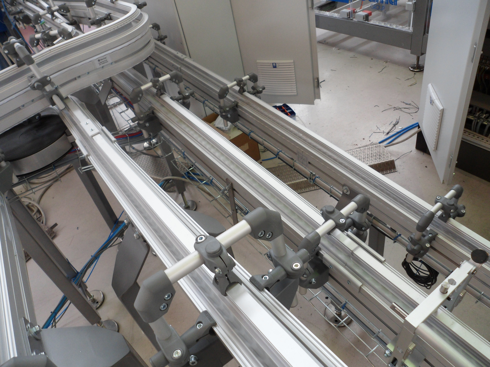

Codice interno: COMP-TAM-01

I tamburi e mototamburi sono elementi essenziali per la trazione dei nastri trasportatori. Disponibili in diverse configurazioni, garantiscono potenza, affidabilità e lunga durata anche in condizioni di lavoro intense.
Produciamo tamburi e mototamburi su misura.
Contattaci